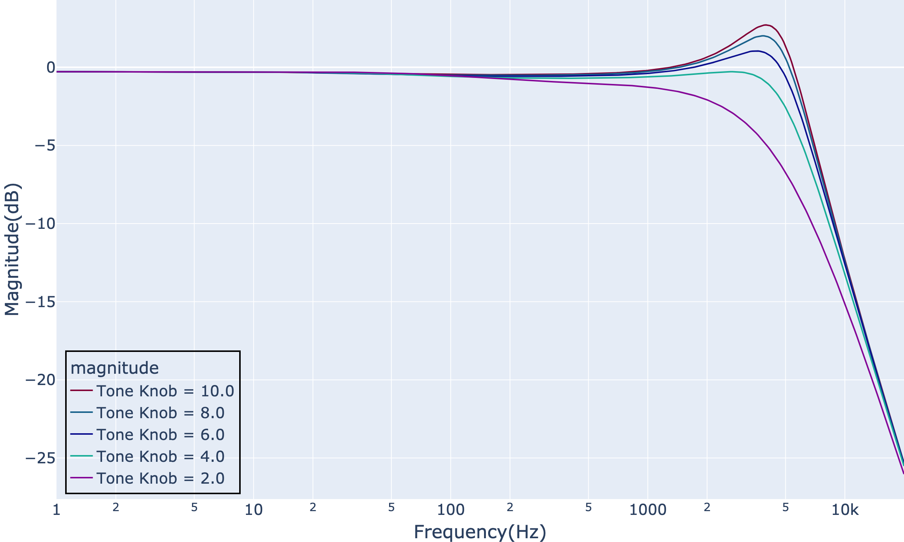
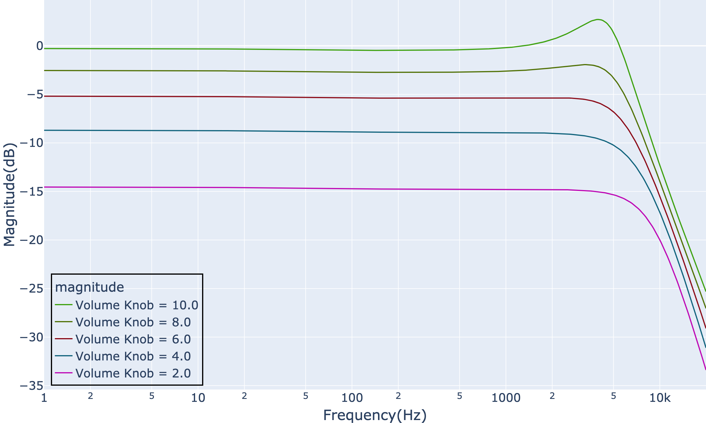
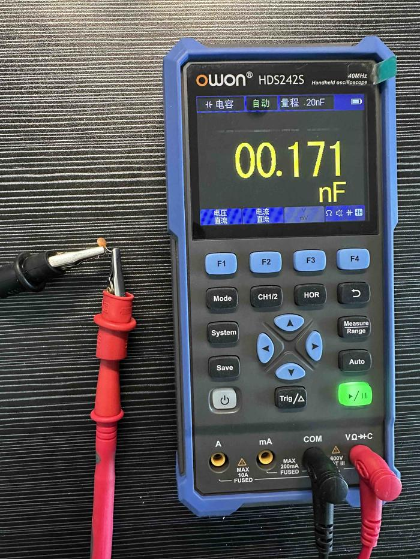

拾音器与吉他电路探索（二）：Volume旋钮与Tone旋钮
本文我们将基于系列的上一篇文章得到的等效电路，观察电吉他的Volume旋钮和Tone旋钮对音色的影响。值得注意的是，Volume旋钮除了字面上对于音量有影响外，也会对频响特征产生影响。基于这个发现，我们能够了解PRS S2中的那个特殊设计的初衷，也就是本系列第一篇文章开头的那个疑问。
Tone旋钮部分对音色的影响
我们首先观察Tone旋钮的设置对吉他端频响的影响。电路我们直接沿用系列第一篇文章得到的单线圈拾音器等效电路：
以及通过little_ac_analysis工具对该电路进行构造：
single_coil_ckt = Circuit(
components = [
# pickup part
VoltageSource(V=1, nodes=[0, 1]),
Inductor(L=2.637, nodes=[1, 2]),
Resistor(R=6.61e3, nodes=[2, 3]),
Capacitor(C=103e-12, nodes=[3, 0]),
# volume part
Potentiometer(R=250e3, knob_pos=10.0, nodes=[3, 5, 0], label='Volume Knob'),
# tone part
Potentiometer(R=250e3, knob_pos=10.0, nodes=[3, 3, 4], label='Tone Knob'),
Capacitor(C=22e-9, nodes=[4, 0]),
# cable
Capacitor(C=360e-12, nodes=[5, 0]),
# load
Resistor(R=1e6, nodes=[5, 0]),
],
output_node = 5,
name = "single coil guitar")我们调整上述代码中label为”Tone Knob”的Potentiometer的值，依次得到不同Tone值下的频响，并将频响曲线们绘制到同一个plot中：

可以看到，Tone旋钮主要对200Hz之后的频率产生影响，其中对2kHz~5kHz有明显影响。随着Tone值不断减小，吉他端频响曲线中标志性的resonant peak逐渐消失，频响慢慢呈现低通特性。
Volume旋钮部分对音色的影响
下面我们运用类似的方法观察Volume旋钮的调整对吉他端频响的影响。
我们沿用上面的单线圈电路代码，然后调整代码中label为”Volume Knob”的Potentiometer的值，依次得到不同Volume值下的频响。下面是汇总的频响曲线图：

可以看到，随着Volume值的变小，整体频响并非等分贝地下降。与Tone旋钮类似，Volume值的减小让resonant peak逐渐消失，并逐渐呈现低通特性。也就是说，Volume值的减小会使吉他音色变得沉闷。
对于这个现象的原因也显而易见，吉他电路仓中的Volume旋钮部分与前级是直接相连的，没有通过诸如Input Buffer的设计做隔离，因此Volume旋钮除了分压以外，也会影响到前级的滤波特性。
Treble-Bleed电容
为了缓解Volume旋钮的减小带来的高频损失，一个常见的做法是在Volume旋钮上并联一个电容。由于这个电容的目的是减少高频的损失，也被称为treble-bleed电容。
在本系列第一篇文章的开头，我们提及了PRS S2中的一处电容就是这个效用。
下面我们继续通过little_ac_analysis工具分析加入treble-bleed电容的电路的频响，并将其与无treble-bleed电容的电路进行对比。
首先，我们需要得到一般用于treble-bleed电容的电容值。笔者将PRS S2中的那颗电容拆下，并用万用表进行测量，得到电容值为171pF。

为了方便阐述，我们沿用前述的单线圈等效电路，并在该电路的指定位置添加一个treble-bleed电容，下面直接通过代码表达该电路：
single_coil_with_bleed_cap_ckt = Circuit(
components = [
# pickup part
VoltageSource(V=1, nodes=[0, 1]),
Inductor(L=2.637, nodes=[1, 2]),
Resistor(R=6.61e3, nodes=[2, 3]),
Capacitor(C=103e-12, nodes=[3, 0]),
# volume part
Potentiometer(R=250e3, knob_pos=10.0, nodes=[3, 5, 0], label='Volume Knob'),
# tone part
Potentiometer(R=250e3, knob_pos=10.0, nodes=[3, 3, 4], label='Tone Knob'),
Capacitor(C=22e-9, nodes=[4, 0]),
# treble bleed cap
Capacitor(171e-12, [5, 3]),
# cable
Capacitor(C=360e-12, nodes=[5, 0]),
# load
Resistor(R=1e6, nodes=[5, 0]),
],
output_node = 5,
name = "single coil guitar with treble bleed cap")最后，我们依次得到带有treble-bleed电容的电路在各个Volume值下的频响，并将其与无treble-bleed电容的电路的频响进行对比，得到如下plot结果：
我们通过滑动Volume Knob减小Volume值，可以发现从Volume=7.0开始，treble-bleed电容的存在逐渐产生效果。随着Volume值越小，其高频部分在整个频响中愈发突出。